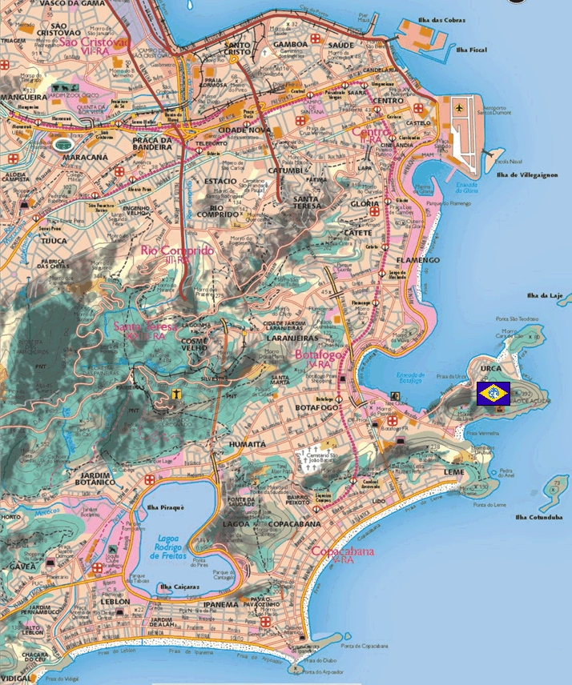

Rio de Janero Rio de Janero
South America, Brazilian Coast Coastal Jungle Urban Fortress Marnery Lying on the western coast of Brazil, Rio de Janero functions as the main link between Jaburo and Belfast, supplying forces at the front with everything from food to medicine to soldiers and mobile suits. It does not have the capability of doing this on its own, but works in tandem with Jaburo, acting more or less as the visible face of the underground super fortress. Although the base itself is situated in an urban area, the city is surrounded by thickly jungled hills, providing an excellent amount of protection against a land assault. Marnery More of a logistical expert than a soldier, Marnery does excellent work as fortress commander in Rio. He is well liked by his men, and seems to be bucking for a promotion, keeping the supply lines of the Federation in such excellent working order. Rio De Janero  |